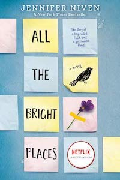
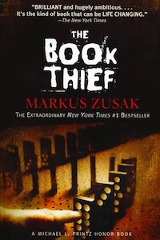
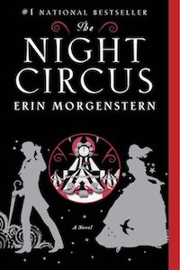

Favorites
All the Bright Places

I enjoyed how this book did not shy away from heavy topics. Having two different narrators gave more insight into how each character was feeling. This book inspired me to want to explore more with my friends. Most importantly, the book reminded me to embrace life and things can always change.
The Book Thief

Liesel's character was very interesting because she had many struggles from losing her family to dealing with poverty. I enjoyed how the Liesel was not pushed to have a romatic relationship. Instead, the book focused on Liesel's growth as an individual and gave importance to all of her relationships with the other characters.
The Night Circus

Imagination is the one word I would use to describe this book. The basic concept is so unique. The vivid imagery of the circus and the magical element made me feel as if I was transported into the book. The jumps in the plot and narration were confusing, but it was amazing how everything tied together in the end.